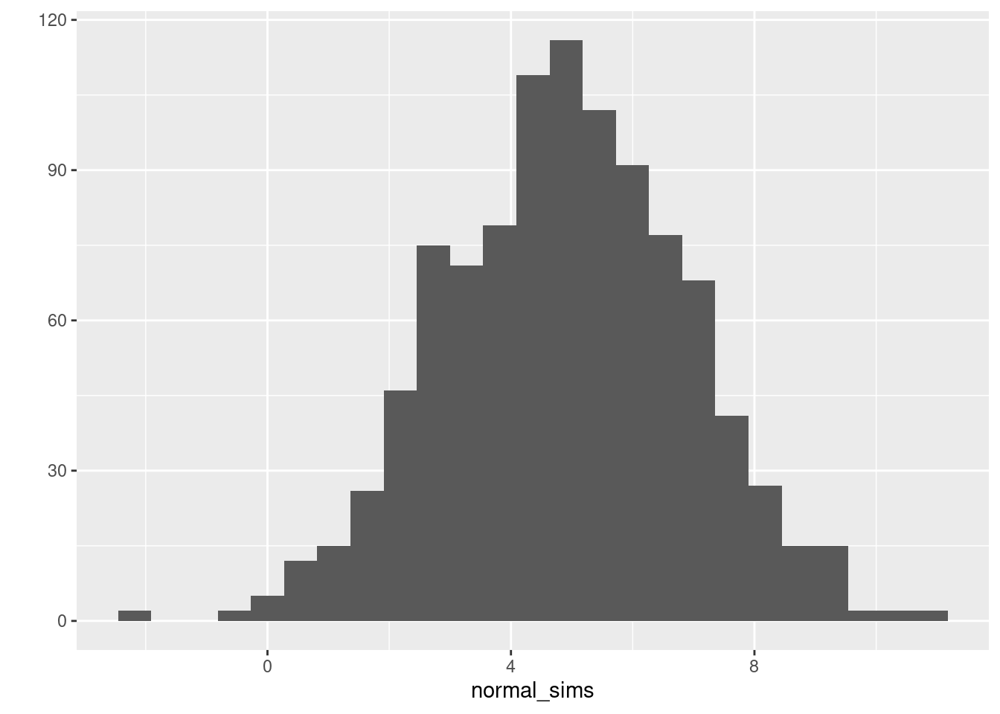
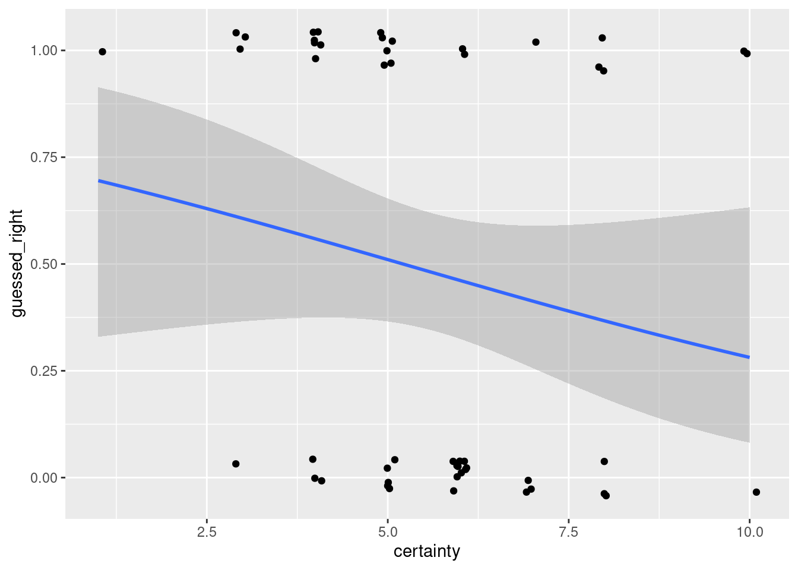

Lesson 1 How to Outsmart a Nobel Laureate
1.1 Is the Hot Hand an Illusion?
If you've read 2002 Nobel Laureate Daniel Kahneman's best-selling book Thinking Fast and Slow, you may remember this passage about the hot hand illusion, a supposed illustration of the human tendency to see patterns in random noise:
Amos [Tversky] and his students Tom Gilovich and Robert Vallone caused a stir with their study of misperceptions of randomness in basketball. The "fact" that players occasionally acquire a hot hand is generally accepted by players, coaches, and fans. The inference is irresistible: a player sinks three or four baskets in a row and you cannot help forming the causal judgment that this player is now hot, with a temporarily increased propensity to score. Players on both teams adapt to this judgment—teammates are more likely to pass to the hot scorer and the defense is more likely to doubleteam. Analysis of thousands of sequences of shots led to a disappointing conclusion: there is no such thing as a hot hand in professional basketball, either in shooting from the field or scoring from the foul line. Of course, some players are more accurate than others, but the sequence of successes and missed shots satisfies all tests of randomness. The hot hand is entirely in the eye of the beholders, who are consistently too quick to perceive order and causality in randomness. The hot hand is a massive and widespread cognitive illusion.
The research that Kahneman mentions was published in a famous paper by Gilovich, Vallone & Tversky (1985), and later summarized for a general audience in Gilovich & Tversky (1989). The abstract of the original paper says it all:
Basketball players and fans alike tend to believe that a player's chance of hitting a shot are greater following a hit than following a miss on the previous shot. However, detailed analyses of the shooting records of the Philadelphia 76ers provided no evidence for a positive correlation between the outcomes of successive shots. The same conclusions emerged from free-throw records of the Boston Celtics, and from a controlled shooting experiment with the men and women of Cornell's varsity teams. The outcomes of previous shots influenced Cornell players' predictions but not their performance. The belief in the hot hand and the "detection" of streaks in random sequences is attributed to a general misconception of chance according to which even short random sequences are thought to be highly representative of their generating process.
Between 1985 and 2011, when Kahneman's book was published, this result was replicated numerous times under a variety of different conditions, making it one of the better-documented biases in human decision-making. But it turns out that the hot-hand illusion is itself an illusion.
In a recent issue of Econometrica, Miller & Sanjurjo (2018) point out a subtle but consequential error in the statistical tests used in the hot hand literature. It turns out that these tests were biased against detecting evidence of a hot hand, even if it did in fact exist. Correcting this mistake and re-analyzing Gilovich, Vallone and Tversky's original dataset "reveals significant evidence of streak shooting, with large effect sizes." The hot hand is real, and the literature has now shifted to trying to estimate the size of the effect.1
There are some helpful lessons that we can draw from this episode. First, we all make mistakes--even Nobel Laureates! Second, successful replications tell us less than we might hope: they could easily reproduce the bias of the original study. But in my view, the real lesson of the hot hand affair is much simpler: you should always run a simulation study.
The probabilistic error that led so many researchers to draw the wrong conclusion about the hot hand is really quite subtle.2 But at the same time, anyone who knows basic programming could have detected the mistake in five minutes if only they had bothered to look. In economics and statistics, simulation is a superpower. It helps us to understand our models, check for mistakes, and make unexpected connections, some of which may even lead to new theoretical results. If you'll pardon my continuation of the Swiss Army Knife metaphor, simulation is the knife: arguably the most useful tool in your toolbox. In this lesson, we'll cover some basic tools for carrying out a simulation experiment in R and use them to shed some light on the illusion of the hot hand illusion.
1.2 R Functions Introduced in this Lesson
sample()rbinom()rnorm()set.seed()identical()replicate()expand.grid()Map()mcMap()from theparallelpackage
1.3 Drawing Random Data in R
Before we can use simulations to study the illusion of the hot hand illusion, we need to review the basics of drawing random data in R. We'll examine the functions sample(), rbinom() and set.seed() in detail. I'll also point you to a large number functions for simulating from well-known probability distributions in R. Finally, you'll have a chance to practice what you've learned by solving a few short exercises.
1.3.1 sample()
R has many helpful built-in functions for making simulated random draws. The simplest is sample(), which makes size random draws without replacement from a vector x. To test this out, I'll create a very simple vector
my_vector <- c('there', 'is', 'no', 'largest', 'integer')The following line of code makes two draws without replacement from my_vector
sample(x = my_vector, size = 2) # without replacement## [1] "largest" "there"If I run the same line of code again, I may not get the same result: it's random!3
sample(x = my_vector, size = 2) # without replacement## [1] "no" "integer"To draw with replacement, set replace = TRUE
sample(x = my_vector, size = 7, replace = TRUE) # with replacement## [1] "is" "integer" "integer" "there" "is" "is" "largest"As usual in R, the argument names x, size, and replace are optional. But it is considered good coding style to explicitly supply an argument name whenever we're overriding a function's default behavior. This makes it easier for anyone reading our code to understand what's happening. Since sample() defaults to making draws without replacement, it's a good idea to write replace = TRUE rather then simply TRUE. But even without writing replace =, the code will still work as long as we supply all of the arguments in the correct order:
sample(my_vector, 7, TRUE) # bad style## [1] "integer" "no" "integer" "there" "largest" "largest" "there"sample(my_vector, 7, replace = TRUE) # good style## [1] "integer" "no" "there" "integer" "integer" "integer" "no"1.3.2 Probability Distributions in R
As a programming language targeted at statistical applications, R supplies built-in functions for all of the most common probability distributions.4
These functions follow a consistent naming convention. They being with either d, p, q, or r and are followed by an abbreviated name for a particular probability distribution. The prefix d denotes a density function (or mass function for a discrete distribution); p denotes a cumulative distribution function (CDF), q denotes a quantile function, and r denotes a function for making random draws from a particular distribution. For example: dunif() gives the probability density function of a uniform random variable, pnorm() gives the CDF of a normal random variable, qchisq() gives the quantile function of a Chi-squared, and rbinom allows us to make random draws from a Binomial distribution. The following table gives a full list of the relevant commands.
| R commands | Distribution |
|---|---|
d/p/q/rbeta |
Beta |
d/p/q/rbinom |
Binomial |
d/p/q/rcauchy |
Cauchy |
d/p/q/rchisq |
Chi-Squared |
d/p/q/rexp |
Exponential |
d/p/q/rf |
F |
d/p/q/rgamma |
Gamma |
d/p/q/rgeom |
Geometric |
d/q/p/rhyper |
Hypergeometric |
d/p/q/rlogis |
Logistic |
d/p/q/rlnorm |
Log Normal |
d/p/q/rnbinom |
Negative Binomial |
d/p/q/rnorm |
Normal |
d/p/q/rpois |
Poisson |
d/p/q/rt |
Student's t |
d/p/q/runif |
Uniform |
d/p/q/rweibull |
Weibull |
There's a single help file for all of the d/p/q/r functions for a particular distribution. For example, if you enter ?dbeta at the console you'll be shown the help files for dbeta(), pbeta(), qbeta(), and rbeta().
To get a feel for how these functions work, let's take a look at rbinom(), the function for drawing from a Binomial distribution. Recall that a Binomial\((m,p)\) random variable equals the number of heads in \(m\) independent tosses of a coin with \(\mathbb{P}(\text{Heads})=p\). Or to use a bit of probability jargon, it equals the number of successes in \(m\) independent Bernoulli trials, each with probability of success \(p\).5 If \(X\) is a Binomial random variable with parameters \(m\) and \(p\), traditionally written as \(X \sim \text{Binomial}(m, p)\) then \(X\) must take on a value in the set \(\{0, 1, 2, ..., m\}\) and the probability that it takes on a particular value \(x\) in this set is
\[
\mathbb{P}(X = x) = \binom{m}{x} p^x (1 - p)^x
\]
The function rbinom() makes random draws with the probabilities given by this formula. Its takes three arguments: size is the number of trials, \(m\) in the formula, prob is the probability of success, \(p\) in the formula, and n is the desired number of Binomial draws. For example, we can make a single draw from a Binomial\((m = 10, p =1 /2)\) distribution as follows
rbinom(n = 1, size = 10, prob = 0.5)## [1] 3and fifteen draws from the same distribution by changing n to 10
rbinom(n = 15, size = 10, prob = 0.5)## [1] 4 7 7 5 5 4 5 3 5 5 3 1 5 4 6It's important not to confuse n with size. The former tells R how many Binomial draws to make. The latter tells R the value of the parameter \(m\) of the Binomial\((m, p)\) distribution.
Perhaps you remember that if \(X \sim \text{Binomial}(m, p)\) then \(\mathbb{E}[X] = mp\) and \(\text{Var}= np(1-p)\). We can approximate these results numerically by simulating a large number of draws, say 5000, from a Binomial distribution:
m <- 20
p <- 0.25
n_sims <- 5000
sim_draws <- rbinom(n_sims, m, p)and then comparing the theoretical value for \(\mathbb{E}(X)\) to a simulation-based approximation:
c(EV_Theoretical = m * p,
EV_Simulation = mean(sim_draws))## EV_Theoretical EV_Simulation
## 5.0000 4.9724and similarly for \(\text{Var}(X)\)
c(Var_Theoretical = m * p * (1 - p),
Var_Simulation = var(sim_draws))## Var_Theoretical Var_Simulation
## 3.750000 3.684775Reassuringly, our simulation results are very close to the theoretical values. They would be even closer if we used a larger value for n_sims.
1.3.3 set.seed()
A key theme of this book is the importance of reproducible research. Anyone else who wants to check your work should be able to obtain exactly the same results as you did by running your code. But this seems to be at odds with the idea of simulating random data. For example, if I run rbinom(10, 4, 0.6) repeatedly, I'll most likely get different results each time:
rbinom(10, 4, 0.6)## [1] 2 2 2 2 2 4 1 2 4 4rbinom(10, 4, 0.6)## [1] 1 2 3 1 2 2 3 3 1 3rbinom(10, 4, 0.6)## [1] 2 4 3 3 2 2 3 3 3 0The function set.seed() allows us to ensure that we obtain the same simulation draws whenever we re-run the same simulation code. To use it, we simply choose a seed, any integer between negative and positive \((2^{31} - 1)\), and supply it as an argument to set.seed(). Simulation draws made on a computer aren't really random: they're only pseudo-random. This means that they "look" random and pass statistical tests for randomness but are in fact generated by a completely deterministic algorithm. Setting the seed sets the initial condition of the pseudorandom number generator. Because the algorithm is deterministic, the same initial condition always leads to the same results. This is what allows us to replicate our simulation draws. Each time we make another draw, the seed changes. But we can always return it to its previous state using set.seed(). For example, suppose I set the seed to 1. and re-run my code from above as follows
set.seed(1)
x1 <- rbinom(10, 4, 0.6)
x1## [1] 3 3 2 1 3 1 1 2 2 4If I run rbinom(10, 4, 0.6) again, I will most likely not get the same result, because the state of the pseudorandom number generator has changed:
x2 <- rbinom(10, 4, 0.6)
x2## [1] 3 3 2 3 2 2 2 0 3 2identical(x1, x2) # safe/reliable way to test if two objects are exactly equal## [1] FALSEbut if I reset the seed to 1 I'll obtain exactly the same result as before:
set.seed(1)
x3 <- rbinom(10, 4, 0.6)
x3## [1] 3 3 2 1 3 1 1 2 2 4identical(x3, x1)## [1] TRUEWhenever you write simulation code, start by choosing a seed and adding the line set.seed(MY-SEED-GOES-HERE) to the top of your R script. You'll often see people use set.seed(12345) or set.seed(54321). When I'm not feeling lazy, I like to generate a truly random number to use as my seed. The website random.org provides free access to bona fide random numbers generated from atmospheric noise. The "True Random Number Generator" on the top right of their main page allows you to make uniform integer draws on a range from "Min" to "Max." Using the widest possible range, \(\pm1\times 10^9\), I generated the seed 420508570 which I'll use in the following exercises.
1.3.4 Exercises
Set your seed to 420508570 at the start of your solution code for each of these exercises to obtain results that match the solutions.
- Run
sample(x = my_vector, size = 10). What happens and why?
R will throw an error. You can't make ten draws without replacement from a set of five objects:
set.seed(420508570)
sample(x = my_vector, size = 10)## Error in sample.int(length(x), size, replace, prob): cannot take a sample larger than the population when 'replace = FALSE'- Write a line of code that makes five draws without replacement from the set of numbers \(\{1, 2, 3, ..., 100\}\).
set.seed(420508570)
sample(1:100, 5)## [1] 100 67 51 44 12- Create a vector of thirty elements called
urnthat represents an urn containing ten blue balls and twenty red balls. Draw five balls with replacement fromurnand store the draws in a vector calleddraws. Then write a line of code to count up the number of blue balls indraws.
Use rep() and c() to construct urn. Use == and sum() to count up the number of blue balls in draws. See the relevant help files for details, e.g. ?rep.
set.seed(420508570)
urn <- c(rep('blue', 10), rep('red', 20))
draws <- sample(urn, 5, replace = TRUE)
draws## [1] "blue" "blue" "red" "red" "red"sum(draws == 'blue')## [1] 2- Make 1000 draws from a normal distribution with mean 5 and variance 4 and store them in a vector called
normal_sims. Calculate the mean and variance of your draws, and plot a histogram.
Consult the help file for rnorm() paying close attention to the fact that R specifies the normal distribution in terms of a mean and standard deviation rather than a mean and variance. You can plot a histogram with any number of functions: e.g. the base R function hist() or qplot() from the ggplot2 package.
set.seed(420508570)
normal_sims <- rnorm(1000, 5, 2) # Variance = 4; Standard Dev. = 2
mean(normal_sims)## [1] 4.895722var(normal_sims)## [1] 3.912262ggplot2::qplot(normal_sims, bins = 25)
- There is no built-in R function called
rbern()for simulating draws from the Bernoulli Distribution with probability of success \(p\). Write one of your own and use it to make ten Bernoulli(0.8) draws. Your functionrbern()should take two arguments: the number of drawsnand the probability of successp.
There are various ways to do this. The simplest is by setting the arguments of rbinom() appropriately.
rbern <- function(n, p) {
# Make n random draws from a Bernoulli(p) distribution
rbinom(n, size = 1, prob = p)
}
set.seed(420508570)
rbern(10, 0.8)## [1] 1 1 1 1 0 1 1 1 1 11.4 The Skeleton of a Simulation Study
While the specific details will vary, nearly every simulation study has the same basic structure:
- Generate simulated data.
- Calculate an estimate from the simulated data.
- Repeat steps 1 and 2 many times, saving each of the estimates.
- Summarize the results.
Thinking in terms of this structure helps us to write code that is easier to understand, easier to generalize, and faster to run. The key is to break these steps down into functions that carry out a single, well-defined task. Generally these will include:
- A function to generate simulated data.
- A function to calculate an estimate from the data.
- A function that repeatedly calls i. and ii. and summarizes the results.
This may sound a bit abstract, so let's see how it works in practice.
1.4.1 A Biased Estimator of \(\sigma^2\)
My introductory statistics students often ask me why the sample variance, \(S^2\), divides by \((n-1)\) rather than the sample size \(n\): \[ S^2 \equiv \frac{1}{n-1}\sum_{i=1}^n (X_i - \bar{X}_n)^2 \] The answer is that dividing by \((n-1)\) yields an unbiased estimator: if \(X_1, ..., X_n\) are a random sample from a population with mean \(\mu\) and variance \(\sigma^2\), then \(\mathbb{E}[S^2] = \sigma^2\). So what would happen if we divided by \(n\) instead? Consider the estimator \(\widehat{\sigma}^2\) defined by \[ \widehat{\sigma}^2 \equiv \frac{1}{n}\sum_{i=1}^n (X_i - \bar{X}_n)^2. \] If \(X_i \sim \text{Normal}(\mu, \sigma^2)\) then \(\widehat{\sigma}^2\) is in fact the maximum likelihood estimator for \(\sigma^2\). With a bit of algebra, we can show that \(\mathbb{E}[\widehat{\sigma}^2] = (n-1)\sigma^2/n\) which clearly does not equal the population variance.6 It follows that \[ \text{Bias}(\widehat{\sigma}^2) \equiv \mathbb{E}[\widehat{\sigma}^2 - \sigma^2] = -\sigma^2/n \] so \(\widehat{\sigma}^2\) is biased downwards. Because the bias goes to zero as the sample size grows, however, it is still a consistent estimator of \(\sigma^2\).
Another way to see that \(\widehat{\sigma}^2\) is biased is by carrying out a simulation study. To do this, we generate data from a distribution with a known variance and calculate \(\widehat{\sigma}^2\). Then we generate a new dataset from the same distribution and again calculate the corresponding value of \(\widehat{\sigma}^2\). Repeating this a large number of times, we end up with many estimates \(\widehat{\sigma}^2\), each based on a dataset of the same size drawn independently from the same population. This collection of estimates gives us an approximation to the sampling distribution of \(\widehat{\sigma}^2\). Using this approximation, we can get a good estimate of \(\text{Bias}(\widehat{\sigma}^2)\) by comparing the sample mean of our simulated estimates \(\widehat{\sigma}^2\) to the true variance \(\sigma^2\).
1.4.2 draw_sim_data()
The first thing we need is a function to generate simulated data. Let's draw the \(X_1, ..., X_n\) from a normal distribution with mean zero and variance s_sq. To do this, we write a simple R function as follows:
draw_sim_data <- function(n, s_sq) {
rnorm(n, sd = sqrt(s_sq))
}The nice thing about writing such a function is that we can test that it's working correctly. For example, suppose you were worried that draw_sim_data does not in fact generate n draws from a normal distribution with mean zero and variance s_sq. Then you could simply draw a large sample and check! Here I'll verify that draw_sim_data() returns a vector of the expected length, with the desired mean and variance, drawn from normal distribution.7 Everything works as expected:
set.seed(420508570)
test_sims <- draw_sim_data(5000, 9)
length(test_sims)## [1] 5000mean(test_sims)## [1] -0.04620928var(test_sims)## [1] 8.832994qqnorm(test_sims)
qqline(test_sims)
1.4.3 get_estimate()
The next step is to write a function that calculates \(\widehat{\sigma}^2\). We can do this as follows:
get_estimate <- function(x) {
sum((x - mean(x))^2) / length(x) # divides by n not (n-1)
}Again it's a good idea to test your code before proceeding. There are several tests we could consider running. First, if all the elements of x are the same then get_estimate() should return zero because (x - mean(x)) will simply be a vector of zeros. Everything looks good:
get_estimate(rep(5, 25))## [1] 0get_estimate(rep(0, 10))## [1] 0Second, get_estimate() should not in general give the same result as var(), R's built-in function for the sample variance. This is because the latter divides by \(n\) rather than \((n-1)\). But if \(n\) is very large, this difference should become negligible. Again, everything works as expected:
set.seed(420508570)
sim_small <- draw_sim_data(5, 1)
c(sigma_hat_sq = get_estimate(sim_small), Sample_Var = var(sim_small))## sigma_hat_sq Sample_Var
## 0.1710749 0.2138436sim_big <- draw_sim_data(5000, 1)
c(sigma_hat_sq = get_estimate(sim_big), Sample_Var = var(sim_big))## sigma_hat_sq Sample_Var
## 0.9814408 0.98163711.4.4 get_bias()
Now we're ready to actually carry out our simulation study. The final step is to write a function called get_bias() that repeatedly calls draw_sim_data() and get_estimate(), stores the resulting estimates \(\widehat{\sigma}^2\) and calculates a simulation estimate of the bias. Compared to the functions from above, this one will be more complicated, so I'll explain it in steps. First the code:
get_bias <- function(n, s_sq, n_reps = 5000) {
draw_sim_replication <- function() {
sim_data <- draw_sim_data(n, s_sq)
get_estimate(sim_data)
}
sim_replications <- replicate(n_reps, draw_sim_replication())
mean(sim_replications - s_sq)
}The function get_bias() takes three arguments: n is the sample size for each replication of the simulation experiment, s_sq is the true population variance from which we will simulate normal data, and n_reps is the number of simulation replications, i.e. the number of times that we want to repeat the simulation. The final argument, n_reps is optional: if you call get_bias() and supply only the first two arguments, R will set n_reps equal to the default value of 5000.
The first step inside of get_bias() constructs a function called draw_sim_replication() that doesn't take any input arguments. This may seem strange: I'll explain it in a moment. For now, focus on the steps that draw_sim_replication() carries out. It first runs draw_sim_data(n, s_q) and stores the result in a vector called sim_data. Next it feeds sim_data as an input to get_estimate(). In other words, it carries out one replication of our simulation experiment. But how does the call to draw_sim_data() "know" which values to use for n and s_sq given that draw_sim_replication() doesn't take any input arguments? The key is that draw_sim_replication() is created inside of another function: get_bias(). When draw_sim_replication() encounters a reference to n and s_sq, it substitutes the values that were supplied as arguments to get_bias().
Here's another way of looking at draw_sim_replication(). We want to be able to run our simulation study for different values of n and s_sq. After we tell get_bias() our desired values of n and s_sq, it constructs a function for us called draw_sim_replication() that hard codes these particular parameter values. From this point on, calling draw_sim_replication() does "the right thing" without our having to explicitly specify n and s_sq.
The next step of get_bias() uses the function replicate() to repeatedly call the function draw_sim_replication() a total of n_reps times. The results are stored in a vector called sim_replications. In essence, replicate() is shorthand for a common way of using a for loop. In the following example, x and y will be identical. But constructing x requires much more work: we first need to set up an empty vector, and then explicitly loop over it. In contrast, replicate() does all of this behind the scenes to construct y:
do_something <- function() {
return(42)
}
x <- rep(NA, 50)
for(i in 1:50) {
x[i] <- do_something()
}
y <- replicate(50, do_something())
identical(x, y)## [1] TRUEFinally, get_bias() uses the simulation replications stored in the vector sim_replications to approximate the bias of \(\widehat{\sigma}^2\) by comparing them to the true value of \(\sigma^2\), namely s_sq. It does this by computing the simulation analogue of \(\mathbb{E}[\widehat{\sigma}^2 - \sigma^2]\), which is simply mean(sim_replications - s_sq).
1.4.5 Running the Simulation Study
Now we're ready to run our simulation study: we simply need to call get_bias() with our desired values of n and s_sq, for example:
set.seed(420508570)
get_bias(n = 5, s_sq = 1)## [1] -0.2007312It works! Up to simulation error, this result agrees with the theoretical bias of \(-\sigma^2/n = -1/5\). To see that this isn't simply a fluke, we could try different values of n and s_sq. Again, the results agree with the theoretical values:
set.seed(420508570)
c(theoretical = -1/3, simulation = get_bias(3, 1))## theoretical simulation
## -0.3333333 -0.34121761.4.6 expand.grid() and Map()
Now we have a function get_bias() that can approximate the bias of \(\widehat{\sigma}^2\) for any values of n and s_sq that we care to specify. But what if we want to carry out a simulation study over a range of values for n and s_sq? One way to do this is with a pair of nested for loops: one that iterates over different values of n and another that iterates over different values of n_sq. But this isn't a great strategy for two reasons. First, loops within loops tend to be slow in R. Second, the book-keeping required to implement this strategy is a bit involved. Fortunately there's a much better way: use expand.grid() and Map().
First we'll set up a grid of values for n and s_sq:
n_grid <- 3:5
n_grid## [1] 3 4 5s_sq_grid <- seq(from = 1, to = 3, by = 0.5)
s_sq_grid## [1] 1.0 1.5 2.0 2.5 3.0Now suppose that we want to run get_bias() for every combination of values in n_grid and s_sq_grid. Using the built-in R function expand.grid() we can easily construct a data frame whose rows contain all of these combinations:
parameters <- expand.grid(n = n_grid, s_sq = s_sq_grid)
parameters## n s_sq
## 1 3 1.0
## 2 4 1.0
## 3 5 1.0
## 4 3 1.5
## 5 4 1.5
## 6 5 1.5
## 7 3 2.0
## 8 4 2.0
## 9 5 2.0
## 10 3 2.5
## 11 4 2.5
## 12 5 2.5
## 13 3 3.0
## 14 4 3.0
## 15 5 3.0Now we can simply loop over the rows of parameter_grid rather than using a loop within a loop. This is effectively what we'll do. But rather than writing an explicit for loop, we'll use Map() to reduce the amount of book-keeping, much as we used replicate() inside the function get_bias() above. The following code creates a list called sim_results() that contains the results from calling get_bias() for each row of parameters
set.seed(420508570)
sim_results <- Map(get_bias, n = parameters$n, s_sq = parameters$s_sq)
head(sim_results)## [[1]]
## [1] -0.3412176
##
## [[2]]
## [1] -0.2546259
##
## [[3]]
## [1] -0.2005197
##
## [[4]]
## [1] -0.5007384
##
## [[5]]
## [1] -0.3816447
##
## [[6]]
## [1] -0.292554You can check that this works as expected by setting the same seed and "manually" running get_bias(3, 1)
set.seed(420508570)
identical(get_bias(3, 1), sim_results[[1]])## [1] TRUESo how does Map() work? Its first argument is a is the name of a function, in this case get_bias. The remaining arguments are vectors that give the values we want to supply as arguments to get_bias(). In this case we use the columns of parameters.
#set.seed(420508570)
#sim_parameters <- expand.grid(n = 3:10, s_sq = c(1, 2, 3))
#sim_results <- lapply(1:nrow(sim_parameters),
# function(i) get_bias(n = sim_parameters$n[i],
# s_sq = sim_parameters$s_sq[i]))
#sim_results <- do.call(rbind, sim_results)
#cbind(sim_parameters, sim_results)1.4.7 Bonus: Parallel Computing with mclapply()
1.5 Your Turn: Simulating the Hot Hand
1.6 Further Reading
Advanced R book for more on replicate() and lapply() as well as scoping rules for functions within functions etc.
1.7 Mini Projects
1.7.1 The Hot Hand Revisited
In the lesson we generated iid data. Now try simulating from a first-order Markov chain for various different parameters. How do the results change?
1.7.2 Which estimator of the variance is really better?
Compare the RMSE of two variance estimators: the unbiased estimator and the MLE.
1.7.3 Optimal Stopping
Simulate the secretary problem; try to find the optimal stopping rule.
1.8 DRAFT MATERIAL
Should I introduce knitr and Rmarkdown in this lesson or the next one?
- Some basic simulation commands in R:
sample(),rbinom(),rnorm(), etc. Read the help files. - Write a function
draw_sim_data()that makes 100 Bernoulli(1/2) draws. Optional argumentspandn? This simulates data when there is no hot hand set.seed()what does it do?- Think about how to calculate the estimator: fraction of times that three ones are followed by another one compared to another zero. Suppose you had a function
is_after_3_ones()that took a vector of 0 and 1 and returned, for each element, whether it is after three ones. How would you use it? Write this function. - Put everything together with
replicate()to do a simple sim for \(p=1/2\) and \(n = 100\). - How about trying different values of \(n\) and \(p\)? Need to keep results organized:
apply()family of functions (or maybe the tidy equivalents?) - Try doing it in parallel with
mclapply(). First explain the basic idea of parallel and why this is "embarrassingly parallel." Show them how to time the code, illustrate withsys.sleep(). - For the students who finish very quickly, have some extensions: a markov chain DGP, and
is_after_k_ones()
dgp <- function(n = 100, p = 0.5) {
rbinom(n, 1, p)
}
# Maybe have a challenge to write the version for after k ones, but start by
# asking them to do the one for after 3 ones
is_after_k_ones <- function(x, k) {
out <- rep(NA)
for(i in (k+1):length(x)) {
out[i] <- sum(x[(i - k):(i - 1)]) == k
}
return(out)
}
get_est <- function(x) {
#ones <- which(x == 1)
#mean(x[ones + 1], na.rm = TRUE)
mean(x[is_after_k_ones(x, 3)], na.rm = TRUE)
}
n_reps <- 1000
set.seed(1234)
sim_results <- replicate(n_reps, get_est(dgp()))
library(ggplot2)
qplot(sim_results)## `stat_bin()` using `bins = 30`. Pick better value with `binwidth`.
mean(sim_results, na.rm = TRUE)## [1] 0.4620068#ones <- which(x == 1)
#x[which(x == 1) + 1]
#runs <- rle(x)
#foo <- rle(x)
#str(foo)
#x
#foo$lengths
#foo$valuesSee for example this write-up of Lantis & Nessen (2021) in the February 2022 NBER digest.↩︎
See Miller & Sanjurjo (2019) for a more accessible explanation that connects to several related probability puzzles.↩︎
Technically, "random" draws made on a computer are only pseudorandom. We'll discuss this further below.↩︎
For less common distributions, see CRAN Task View: Probability Distributions↩︎
A Bernoulli trial is a model for a possibly biased coin flip: if \(X \sim \text{Bernoulli}(p)\) then \(\mathbb{P}(X=1) = p\) and \(\mathbb{P}(X=0) = 1-p\).↩︎
To see this, first rewrite \(\sum_{i=1}^n (X_i - \bar{X}_n)^2\) as \(\sum_{i=1}^n (X_i - \mu)^2 - n(\bar{X}_n - \mu)^2\). This step is just algebra. Then take expectations, using the fact that the \(X_i\) are independent and identically distributed.↩︎
If you're unfamiliar with the Normal Q-Q plot that I used to check the normality of
test_sims, you can read about it this blog post.↩︎